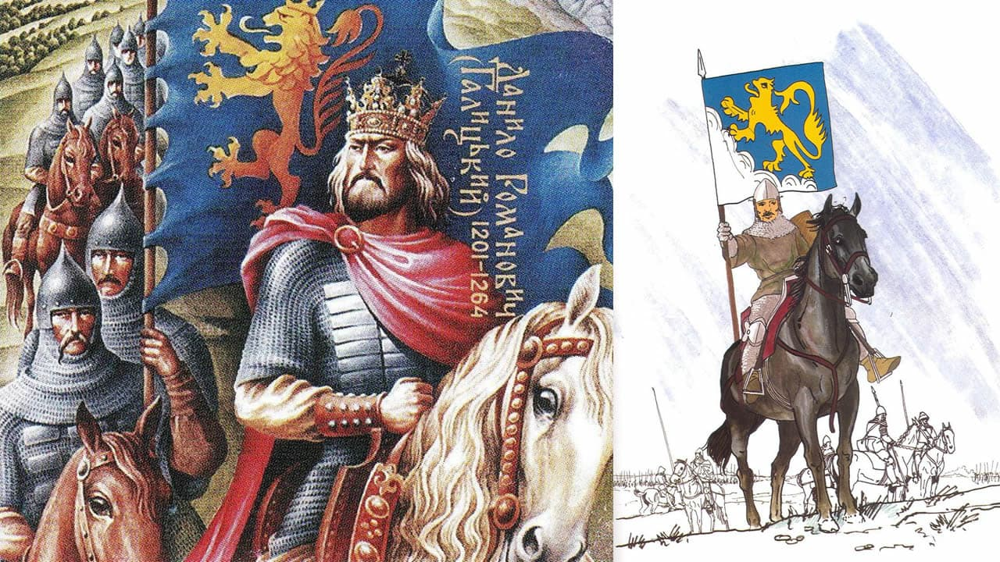
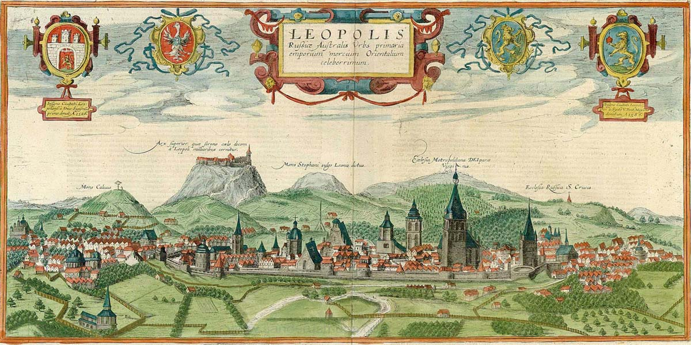

Історія Львова: хто заснував Львів
Засновники Львова
Львів заснований галицьким князем Данилом Романовичем в середині XIII століття. Близько 1272 року місто стало столицею Галицько-Волинського князівства, надалі також було столицею Королівства Русь, Королівства Галичини і Лодомерії, Західно-Української Народної Республіки, Української держави.

Назва "Львів"
Назва «Львів» дана місту на честь князя Лева Даниловича, сина засновника Львова Данила Галицького. Впродовж всієї своєї історії місто жодного разу не змінювало назви.
Щодо Львова традиційними є багато епітетів. Розповсюдженою є назва «Місто Лева». Час від часу вживаються такі порівняння, назви та словосполучення, як «місто левів», «місто сплячих левів», «Королівське місто», «Перлина корони Європи», «Місто-музей», «столиця Галичини», «маленький Париж», «маленький Відень», «український П’ємонт», «Бандерштадт», «культурна столиця України» та інші.
Хронологія подій До 1340 p – Руське Королівство. Львів у складі Галицько-Волинського князівства

1247 рік – існує гіпотиза, що місто засноване Данилом Романовичем в 1247 році з нагоди одруження Лева Даниловича з угорською принцесою Констанцією, дочкою короля Бели IV. За роки незалежності, на підставі аналізу джерельних матеріалів, Іван Паславський обґрунтував версію про заснування Львова у 1240 році. Мечислав Орлович вказував, що заснування, міста 1240 року певне було пов’язане з жорстоким зруйнуванням княжого Галича 1241 року.
1253 рік – Данило Романович коронований як король Русі. Це означало, що відтепер він перестав вважатися васалом Золотої Орди. Король повсюди будує фортеці, однією з них був Львів. Його столиця була в Холмі, на заході Галицько-Волинської держави, біля польського кордону. Відтепер «старшим» престолом вважався галицький, який був удостоєний королівської традиції. За Галичиною закріпилася назва «Русь». «Молодшим», князівським, престолом був волинський.
Король Русі (лат. Rex Russiae) - титул, яким Папа Римський Інокентій IV наділив правителя Галицько-Волинського князівства Данила Романовича у 1253 році. З подальших галицько-волинських князів королем коронувався онук Данила Юрій Львович (на аверсі його збереженої мастичної печатки названий «Rex Russiae» - король Русі, а на реверсі - «Dux Ladimiriae» - князь Володимирії). На печатках грамот 1316, 1325, 1327, 1334 і 1335 рр. сини Юрія Львовича, Андрій і Лев, і онук по доньці, Болеслав-Юрій, продовжували іменуватися «Rex Russiae». «Королівство Русі» згадувалося в титулі Юрія II Болеслава і в титулі польського короля Казимира III після захоплення Галицької землі Польщею 1349 року. Казимир III карбував окрему монету для Руського королівства. В середині XIV століття, згідно з документами, термін «Королівство Русі» закріплюється за Галичиною, на відміну від Волинської землі.
1272 рік – король Лев I Данилович переніс столицю Галицько-Волинської держави з Холма до Львова. Тут також, ймовірно, знаходився фактичний осідок митрополитів Галицьких, предстоятелів окремої митрополії Константинопольського патріархату, що існувала з перервами від 1303 до 1401 року.
1308 рік – скоро в Орді зміцніла влада хана Узбека. Це збіглося зі смертю Юрія І Львовича близько 1308 року. Його наступники сини Андрій і Лев (одному з них дістався галицький престол, іншому – волинський) вели війни за незалежність від Золотої Орди і загинули.Після них на престол сів їхній племінник (небіж) князь Юрій ІІ Болеслав, пов’язаний із польською князівською династією. Спочатку гарнізон Львова у 1324 році навіть не хотів відчинити перед ним браму. Зміцніло Польське королівство – Юрій ІІ Болеслав змушений був лавірувати поміж ним і Ордою.
1340-1349 – Львів під владою боярської олігархії Дмитра Детька з Перемишля і Данила з Острова
1340 рік – після смерті галицько-волинського князя Юрія II Болеслава волинські бояри проголосили правителем Дмитра-Любарта Гедиміновича. Того ж року король Польщі Казимир ІІІ напав на Львівську і Перемишльську землі; між ним і Любартом почалася «Війна за Галицько-Волинську спадщину». В цих умовах місцеві бояри під проводом Дмитра Дедька взяли владу в свої руки, спочатку визнаючи зверхність Королівства Польського, а з 1341 року – сюзеренітет Дмитра-Любарта Гедиміновича.

Руське Королівство: протистояння з Польщею та Угорщиною (1349-1387)
1349 рік – польський король Казимир III Великий (разом з уграми) вдруге захопив Галичину і здобув Львів – Руське королівство увійшло до складу Польщі на правах автономії.
1350 роки – у 50-их роках в Львові почали карбувати власну монету – мідні денарії та півгроші. Львів отримав статус другої столиці Польської Корони поряд із Краковом. Хоч старостами до Львова призначалися представники польської шляхти, проте всюди на місцях сиділа сильна ще руська шляхта і бояри.